Para café de especialidad · Café Martínez
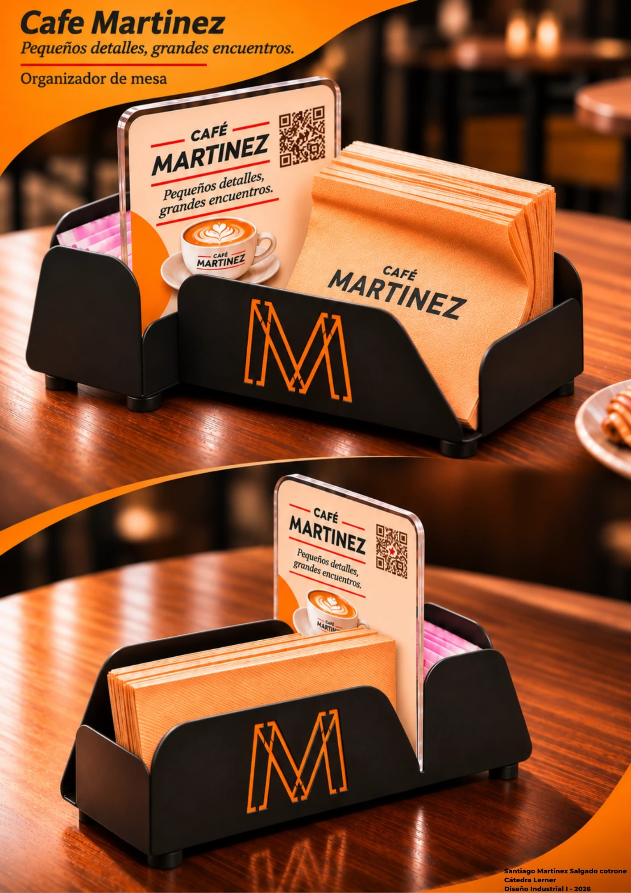
Alumno: Santiago Martínez Salgado Cotrone
Diseño Industrial - 0141531
Cátedra: Lerner
Diseño Industrial I · 2026
El Proyecto Integrador de Diseño Industrial I propone el rediseño de un producto de uso cotidiano a partir de un problema concreto. Esta carpeta documenta el recorrido de un organizador de mesa pensado para Café Martínez, desde el primer boceto hasta el prototipo final.
Organizador de mesa, "para café de especialidad".
Objetivo: rediseñar un organizador de mesa, fabricado en chapa de acero (proto), que resuelva la contención de servilletas, edulcorantes y azúcar, y que ofrezca un espacio gráfico para la marca y un código QR.
Realizar un rediseño o mejora del producto y mejorar los paneles: el publicitario, el tecnológico y el prototipo.
La consigna es general y se aplicó a Café Martínez. El organizador ordena servilletas y sobres sobre la mesa, e incorpora la identidad de la marca (logo y QR) como parte del objeto, bajo el lema "Pequeños detalles, grandes encuentros".
La propuesta parte del encuentro y la superposición de planos de chapa que organizan los elementos del servicio. La morfología surge de dos piezas principales que se relacionan y forman una unidad compacta. Mediante plegado y soldadura, la pieza resuelve sectores para servilletas, azúcar, edulcorante y sal, e incorpora la identidad gráfica de Café Martínez y el código QR.
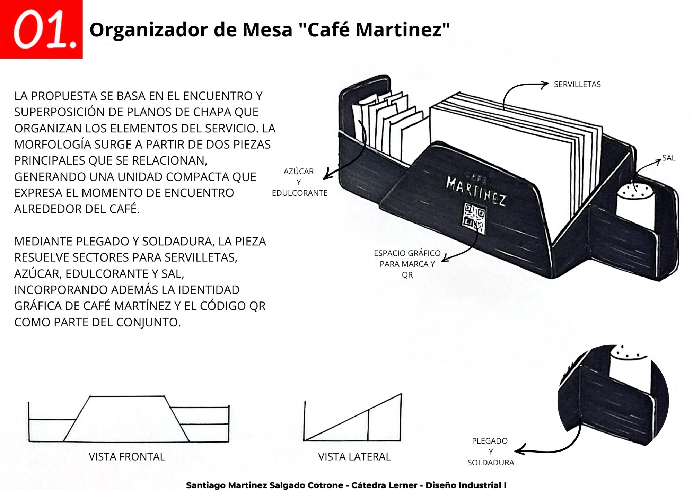
El concepto se llevó a dos bajadas formales en tonos marrones de la marca, con vistas acotadas (aprox. 200 × 80 × 80 mm), detalles de uso, materialidad y un desarrollo de la chapa en plano. La 01 resuelve el sector de sobres con un lateral más alto y un frente bajo para las servilletas. La 02 separa los compartimentos de azúcar y edulcorante, y deja un frente de servilletas más limpio.
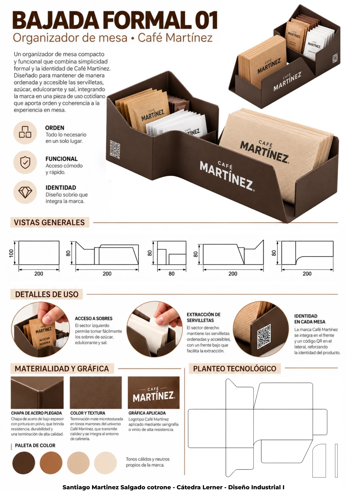
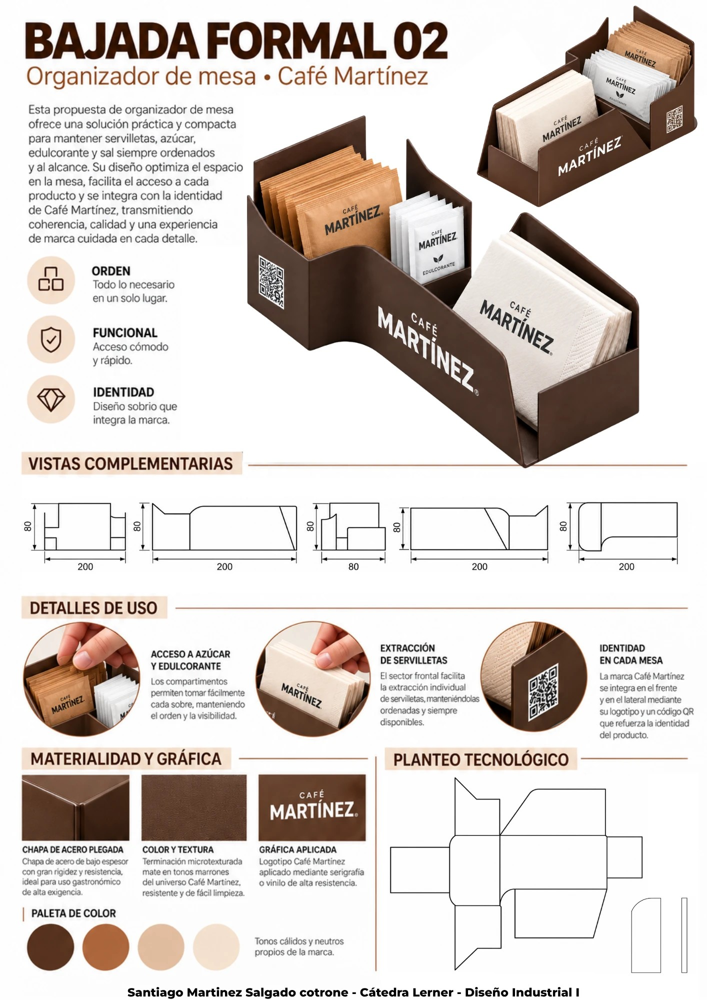
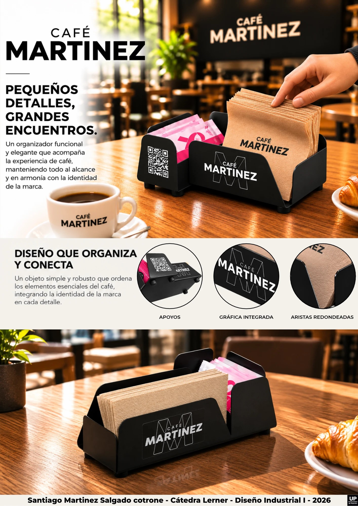
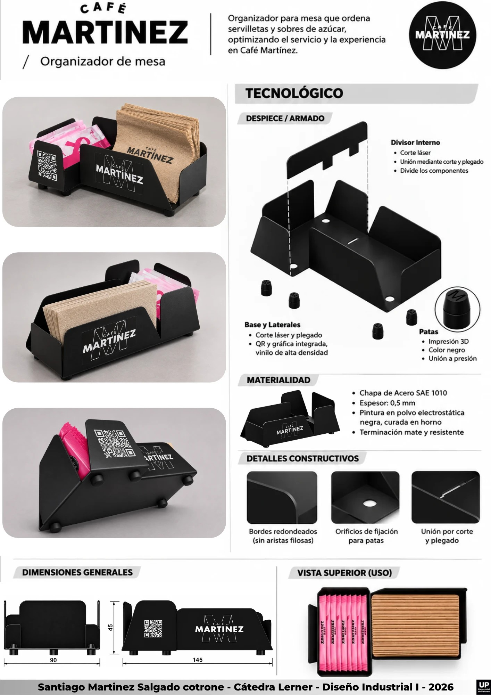
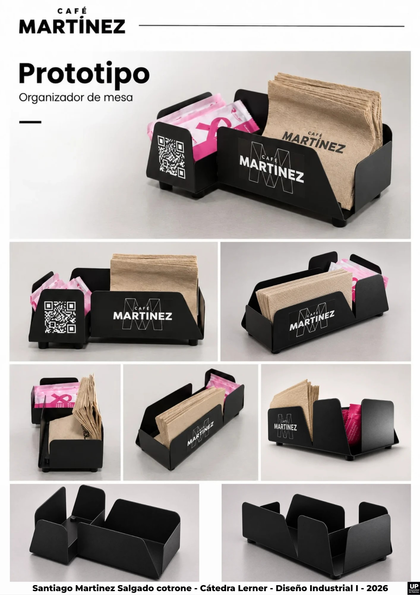
En el Momento 3 el organizador se compactó (145 × 90 × 45 mm) y pasó a chapa de acero SAE 1010 de 0,5 mm con pintura en polvo negra. Se sumaron patas impresas en 3D, un divisor interno y la marca resuelta con vinilo de alta densidad sobre la chapa, con el QR en el lateral.
El rediseño se orientó a facilitar la producción en cantidad: menos materiales, menos operaciones manuales y la marca resuelta dentro del propio proceso de fabricación.
| Aspecto | M3 | M4 | Razón |
|---|---|---|---|
| Gráfica | Vinilo sobre la chapa | Se quita el vinilo | Elimina un material y una operación manual de aplicación. |
| Logo | Vinilo blanco | "M" calada con corte láser | Se hace en la misma pasada que el corte de la pieza: más fácil y rápido de producir en cantidad. |
| Marca y QR | En la chapa | En el acrílico divisor | La información queda en una pieza visible y separada, que puede cambiarse sin modificar el organizador. |
| Paleta | Negro y blanco | Negro y naranja | Mayor presencia de marca y calidez en la mesa. |
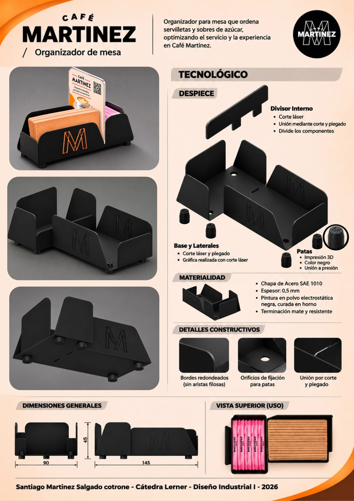
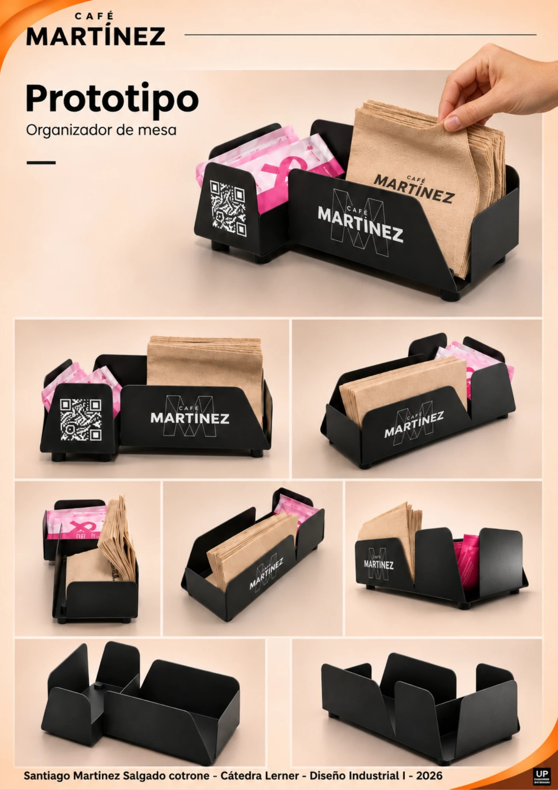
| Pieza | Material | Proceso |
|---|---|---|
| Base y laterales | Chapa de acero SAE 1010, espesor 0,5 mm | Corte láser y plegado. Logo "M" calado con láser. Pintura en polvo electrostática negra, curada en horno, terminación mate. |
| Divisor interno | Chapa de acero SAE 1010 | Corte láser. Unión mediante corte y plegado. |
| Patas | Impresión 3D, color negro | Unión a presión en orificios de fijación de la base. |
| Acrílico divisor con gráfica y QR | Acrílico | Gráfica y QR aplicados sobre el acrílico. (Espesor y técnica: a completar) |
| Largo | Ancho | Alto |
|---|---|---|
| 145 mm | 90 mm | 45 mm |
Registro fotográfico del prototipo real: la chapa sola, el organizador con servilletas y sobres, y la versión con la gráfica agregada.
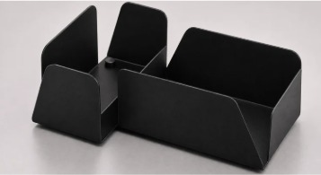
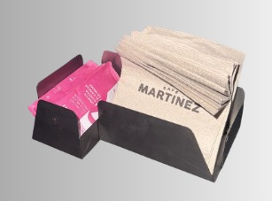
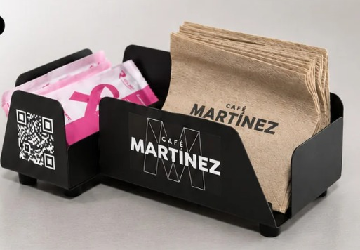
Partir de un problema concreto, un organizador para una cafetería, y recorrer todas las etapas: boceto, bajada formal, prototipo y rediseño. Ver cómo cada decisión de diseño depende del material y del proceso con el que se fabrica la pieza.
Que mejorar un producto no siempre es agregarle cosas. En el Momento 4 quité el vinilo y pasé el logo al corte láser, y la gráfica y el QR al acrílico. El resultado es un objeto más simple de producir en cantidad y más fácil de actualizar.